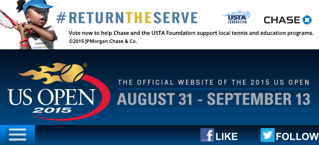

Tennis data + IBM =
This year, IBM is bringing fans more than the score with real time tennis data. Here you’ll find a mix of IBM insights, player stats, US Open trivia, NYC tips and stories celebrating tournament host, New York City. So visit often and share what you find fun and insightful. It’s all here to help you see tennis in a new way. For more match stats and analytics, be sure to check out IBM Slamtracker.
- All
- Tennis + NYC
- Scores + More
- US Open Trivia
- At the Open
- Urban Tennis
- NYC Tips
- This year, IBM is bringing fans more than the score with real time tennis data. Here you’ll find a mix of IBM insights, player stats, US Open trivia, NYC tips and stories celebrating tournament host, New York City. So visit often and share what you find fun and insightful. It’s all here to help you see tennis in a new way. For more match stats and analytics, be sure to check out IBM Slamtracker.